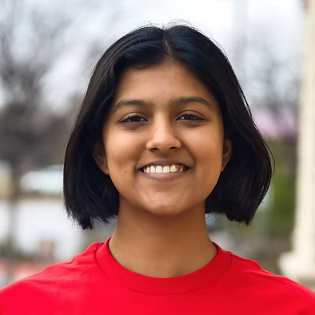
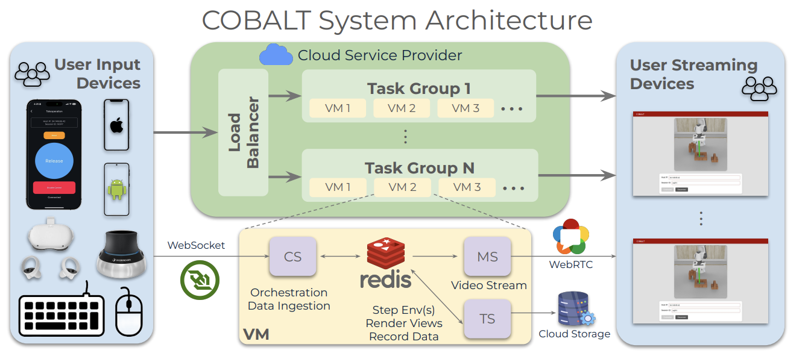

|
Ranjani Koushik
I'm a B.S Senior at Georgia Tech, interning at Google Research this summer in Seattle. I am mentored by Ratan Murty where I work on predicting the brain using encoding models. I am seeking Fall 2027 PhD positions! Previously I've worked at Georgia Tech Research Institute predicting plant disease using computer vision, and the PAIR lab on robot simulation teleoperation.
Email /
CV /
Scholar /
Twitter /
Github
|

|
Research
im interested in computational neuroscience, computer vision by extension, and I enjoy low level programming and operating system concepts. Specifically:
- Modeling the functional organization of elements of the visual cortex from neural activity
- Sound symbolism phenomena, particularly the Bouba/Kiki
|
|

|
COBALT: Crowdsourcing Robot Learning via Cloud-Based Teleoperation with Smartphones
Ayush Agarwal*, Ansh Gandhi*, Jeremy A Collins, Omar Rayyan, Aryan Sarswat, Ranjani Koushik, Masoud Moghani, Ajay Mandlekar, Animesh Garg
ICRA, 2026
paper / website
A teleoperation platform that enables uninterrupted, concurrent data collection from multiple users worldwide using everyday devices like smartphones. This work not only significantly reduces teleoperation costs but also demonstrates the scalability of smartphone-based robot learning by successfully crowdsourcing 7500+ high-quality robot demonstrations from 50+ inexperienced teleoperators across nine countries.
|
|
{kind=link}